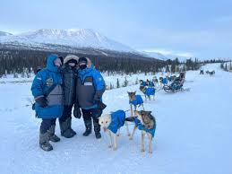
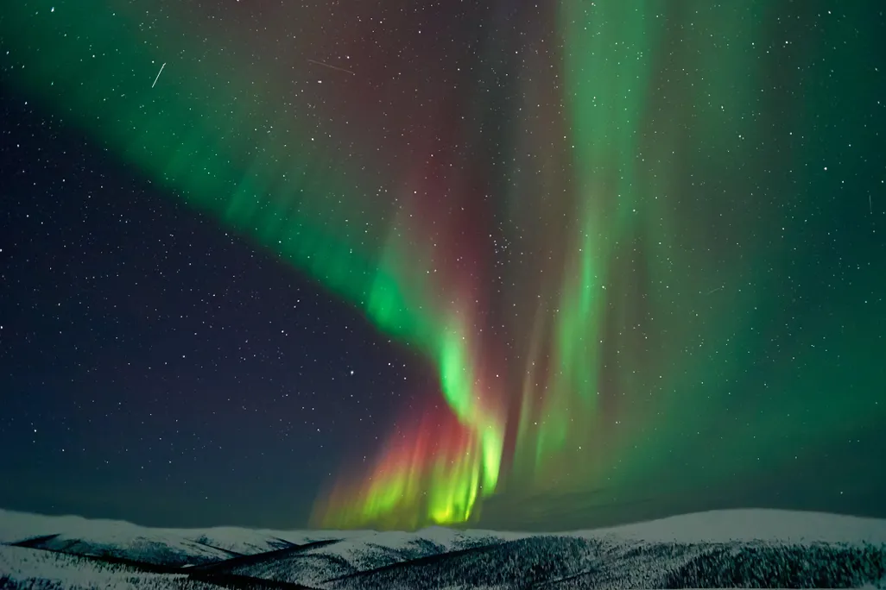
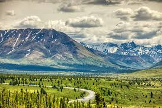

Alaska Trip Ideas and Tips
Plan your perfect Alaska adventure with breathtaking landscapes, glaciers, and unforgettable Arctic experiences.
Get startedTop Alaska Experiences
Glacier Exploration

Experience Alaska’s world-famous glaciers through guided hikes, boat tours, and helicopter excursions.
Special Arctic Activities

Enjoy unique Alaska adventures such as dog sledding and relaxing in Chena Hot Springs surrounded by snow.
Northern Lights Viewing

Witness the magical aurora borealis lighting up the night sky, especially during fall and winter.
Denali National Park
Denali National Park is home to North America’s tallest peak and offers stunning scenery, hiking opportunities, wildlife viewing, and unforgettable wilderness experiences.

Best Time to Visit Alaska
Summer (June–August) offers warm weather and long daylight hours, while winter is ideal for Northern Lights viewing and winter sports.
Travel Tips for First-Time Visitors
Pack layers, plan transportation early, and book tours in advance to ensure a smooth and enjoyable trip.
Heard enough?
Explore more here
Plan your trip now!